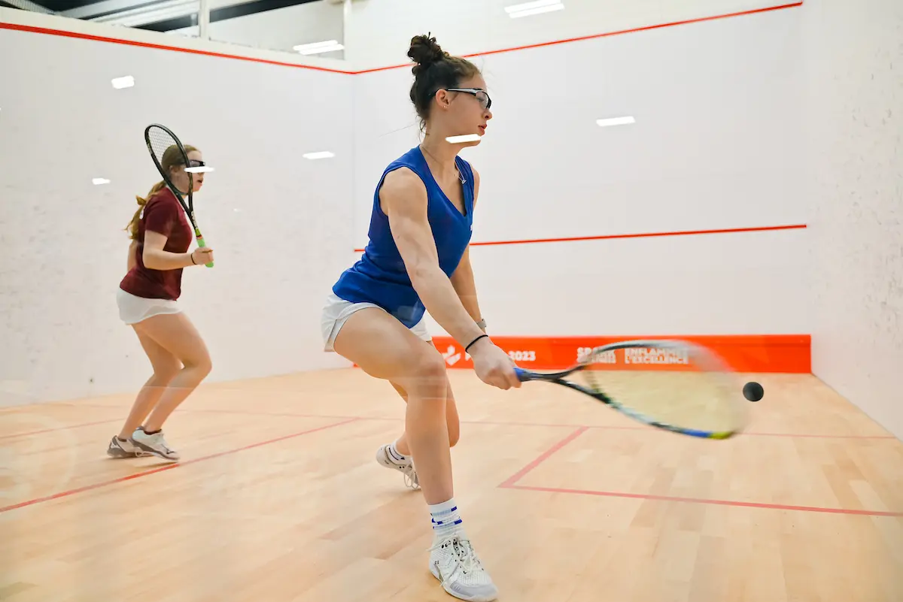

My favorite color is undecided currently but I like dark blue and pale pink
I play squash, judo, the cello, and I am learning Japanese. I'm also pretty good at swimming, skiing, and volleyball.
I am a frequent attender of spanish club and art room.
I enjoy drawing and painting but I want to experiment with oil pastels.
I really enjoy music and spotify is way better than apple music. My music taste is pretty eclectic so I probably have a playlist for almost every genre.
If I had to choose a couple music artists who I really love it would be:
Out of all the sports I don't play I like watchign hockey.
I'm a huge animal lover.
I hope to advocate for women's rights in highschool by starting a nonprofit!
I'm a huge animal lover.
I really love sports.
I like learning and I enjoy improving.
I have a bad habit of not enjoying things I'm not good at to the extent of not wanting to improve.
I really like planning and organizing things.
I love self-care and beauty.
I want to learn how to cook and bake even though I'm really bad at it.
I like golf but I'm really bad at it!
My favorite fruits are watermelon and lychee.
My favorite drink is a banana milkshake or smoothie.
My favorite meal is the Japanese curry my dad makes.
A couple book recommendations, coming from someone who doesn't read that much, are The Power of Women by Dr. Denis Mukwege and If Cats Dissapeared from the world by Genki Kawamura.
I want to dye my hair light pink in a peakaboo style but I'm scared to bleach my hair.
I want to try ariel yoga and pilates.
I like being busy and I hate being bored.
My favorite season is spring!!!
 This is an image of what playing squash looks like, since everybody asks me what it looks like (I don't mind people asking, also that is not me in the photo!).